目标架构
- Chatbox UI：负责资料入口、连续对话、Agent 状态机、产物推进台、确认与导出交互。
- FastAPI API：提供 workspace、文件导入、profile/JD/application/artifact/chat 接口。
- KeywordChatCore：本地确定性意图路由，区分自由追问、状态查询和显式工具执行。
- JobPilot Domain Tools：写入 career_facts、job_parse、match_report、application_package 等 artifact，并保留 source_refs、questions_to_confirm、version。
- SQLite workspace：本地保存聊天、产物、版本和导出文件；默认不调用真实外部 provider。
- Acceptance Evidence：Chrome/CDP 驱动真实界面、截图、HTML 报告和 pytest/build 命令结果。
当前实现
- React/Vite Chatbox 初始化本地 workspace 和 chat session。
- 页面通过 FastAPI ingest-local 导入仓库内脱敏本地资料，再通过真实 UI 继续对话。
- 申请包默认携带 blocking questions_to_confirm；未确认导出会返回 EXPORT_PRECHECK_FAILED。
- artifact confirm 会同步确认当前 artifact_version；确认后 Markdown/DOCX 导出可执行。
- 右侧推进台按 needs_confirmation、confirmed、exported 展示状态；保留确认项作为审计记录。
- 本场景不使用 API Key，不执行 MiniMax/DeepSeek/OpenAI-compatible 外呼。
自动化步骤
| # | 步骤 | 动作 | 结果 |
|---|---|---|---|
| 1 | Open Chatbox | goto | passed |
| 2 | Wait for local workspace | waitText | passed |
| 3 | Initial P5 desktop state | screenshot | passed |
| 4 | Ingest local redacted materials | evaluate | passed |
| 5 | Fill JD | fill | passed |
| 6 | Send JD | clickText | passed |
| 7 | Wait JD parsed | waitText | passed |
| 8 | JD and match evidence | screenshot | passed |
| 9 | Fill package request | fill | passed |
| 10 | Send package request | clickText | passed |
| 11 | Wait package generated | waitText | passed |
| 12 | Package needs confirmation evidence | screenshot | passed |
| 13 | Try export before confirmation | evaluate | passed |
| 14 | Wait export blocked | waitText | passed |
| 15 | Blocked export evidence | screenshot | passed |
| 16 | Confirm package facts | evaluate | passed |
| 17 | Wait package confirmed | waitText | passed |
| 18 | Confirmed package evidence | screenshot | passed |
| 19 | Export after confirmation | evaluate | passed |
| 20 | Wait export completed | waitText | passed |
| 21 | Export completed evidence | screenshot | passed |
| 22 | Export completed 1200 evidence | screenshot | passed |
| 23 | Export completed 1600 evidence | screenshot | passed |
| 24 | Export completed 1920 evidence | screenshot | passed |
| 25 | Narrow exported layout evidence | screenshot | passed |
| 26 | Mobile exported layout evidence | screenshot | passed |
验收标准
- 页面显示本地就绪、Mock 本地模式和本地隐私边界。
- 浏览器自动导入本地资料后，可以在真实 UI 中解析 JD 并生成匹配报告。
- 生成申请包后，推进台显示需确认状态和确认问题。
- 未确认导出必须失败，并在对话区出现可理解的恢复提示。
- 点击确认事实后，状态机不再把该申请包计为待确认。
- 确认后导出成功，报告截图可见导出完成提示或已导出状态。
- 1200、1440、1600、1920、720、390 视口均有真实界面截图证据。
- 报告明确未验证真实个人资料、真实外部 provider、SaaS、ASR、会议平台和自动投递。
命令结果
| 命令 | 状态 | 证据 |
|---|---|---|
.venv/bin/python -m pytest tests/evals/test_p5_local_data_closure_eval.py -q | passed | 6 passed；覆盖本地资料闭环、阻塞确认、编辑后重新阻塞、自由追问不写 artifact、目标 JD 申请包路由、source_refs preflight。 |
.venv/bin/python -m pytest tests/evals/test_p1_export_preflight_eval.py tests/test_demo_flow.py tests/evals/test_p2_guided_demo_flow_eval.py tests/evals/test_full_demo_flow_eval.py tests/evals/test_artifact_and_session_hardening_eval.py -q | passed | 9 passed, 1 warning；受影响导出、示例工作流和 artifact 回归已更新为确认后导出。 |
npm --prefix apps/chatbox run build | passed | TypeScript 与 Vite build 通过。 |
PRD 规格检视
| PRD / Gate 要求 | 证据 | 结论 |
|---|---|---|
| P5-M1：真实资料本地导入可理解。 | 浏览器场景通过后端 ingest-local 导入脱敏本地资料，随后真实 UI 继续执行。 | PASS for automated local fixture |
| P5-M2：JD 解析与匹配报告成立。 | 截图等待“我已解析岗位并生成适合度分析”。 | PASS for local/mock automated path |
| P5-M3/M4：申请包必须确认事实后才能导出。 | 未确认导出截图等待“导出失败”，确认后截图等待“申请包已导出”。 | PASS for confirmation gate |
| P5-FC：自由追问不应误触发工具。 | pytest 覆盖“这个经历能用于这个 JD 吗？”不新增 artifact。 | PASS by eval |
| P5 出门仍需要人工体验审查。 | 本报告只提供自动化浏览器证据。 | NOT A HUMAN ACCEPTANCE |
代码检视
| 区域 | 结论 | 级别 |
|---|---|---|
| services/tools/jobpilot.py | application_package 默认生成 blocking confirmation；export_application_package 按 artifact/version confirmed 状态执行 preflight。 | pass |
| services/chat/core.py | 本地自由追问增加“还缺/缺什么/能用于/能投吗”等 next-step 识别，避免短 JD 相关追问误触发 JD 解析。 | pass |
| apps/chatbox/src/main.tsx | 待确认计数不再把已确认/已导出的保留确认项误计为待确认；导出失败会显示恢复提示。 | pass |
文档审计
| 区域 | 结论 | 状态 |
|---|---|---|
| P5 PRD / Architecture / Gates | 当前文档已把 P5 限定为本地资料闭环，外部 provider、SaaS、ASR、自动投递均为非目标或后续阶段。 | pass |
| Acceptance report boundary | 本报告不得替代人工体验审查，不得声明真实个人资料或真实 provider 默认路径已通过。 | pass |
截图证据
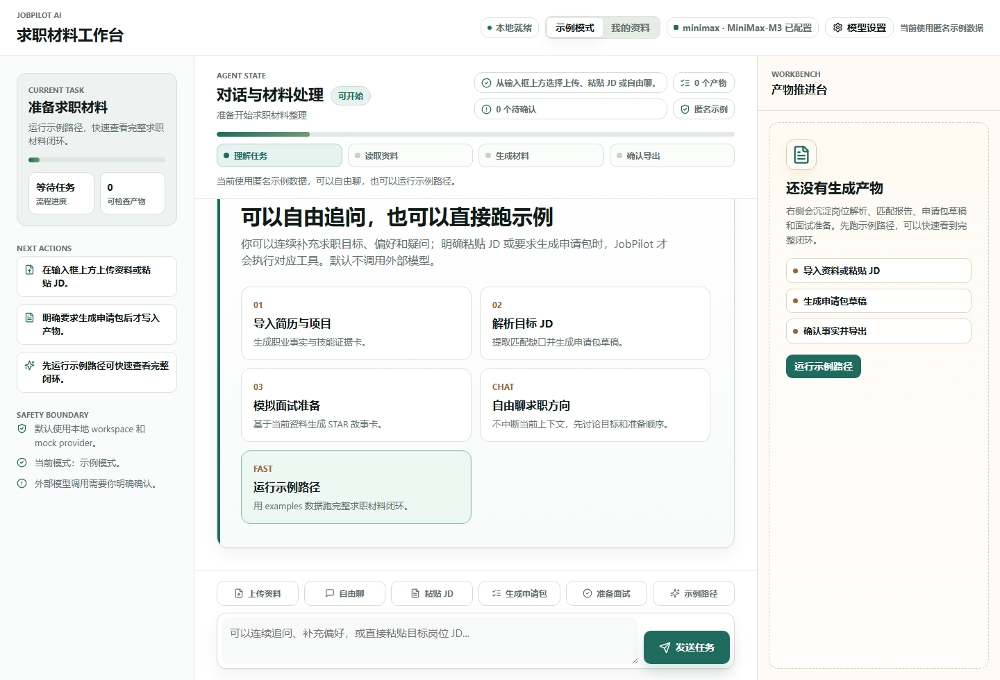
p5-local-data-closure-evidence/p5_initial_desktop.png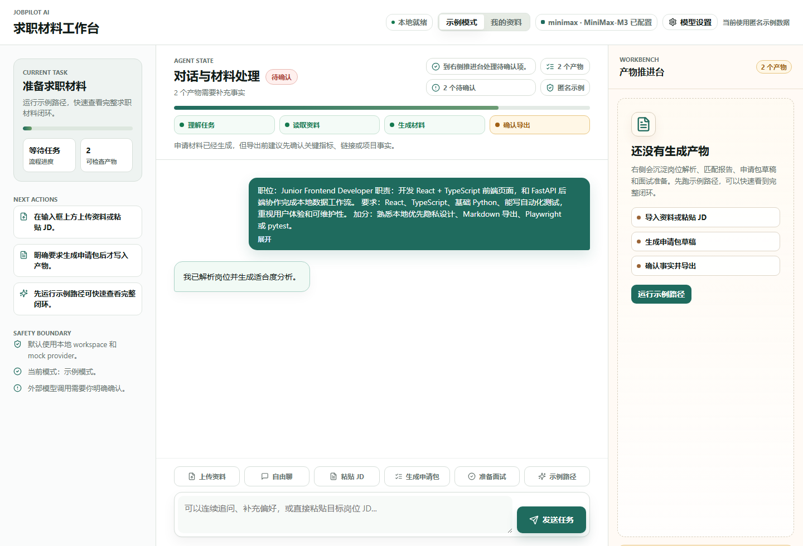
p5-local-data-closure-evidence/p5_jd_match_desktop.png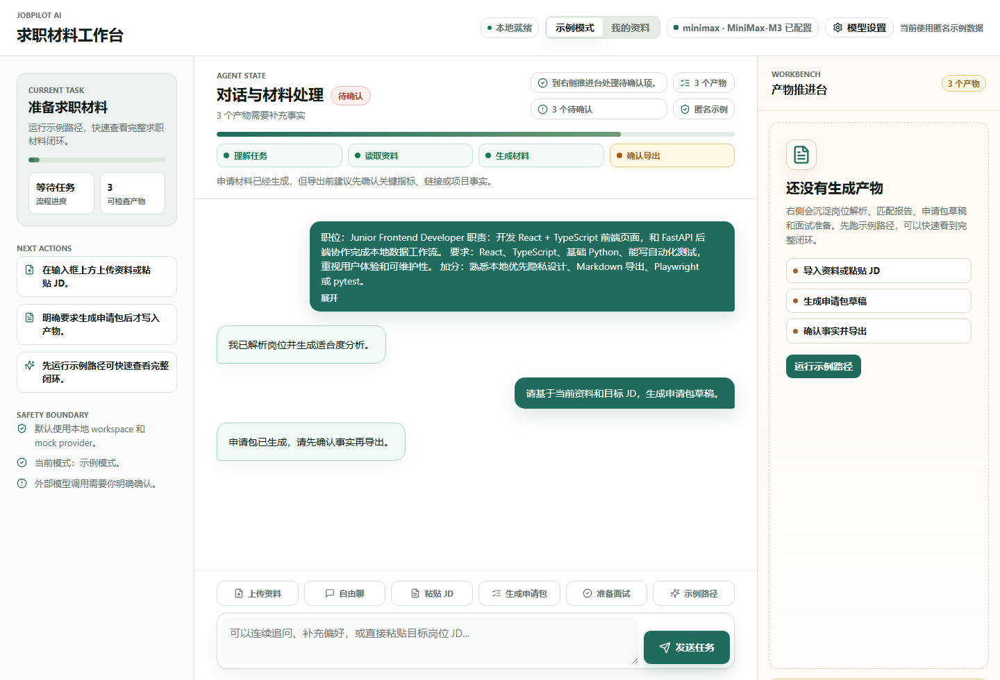
p5-local-data-closure-evidence/p5_package_needs_confirmation.png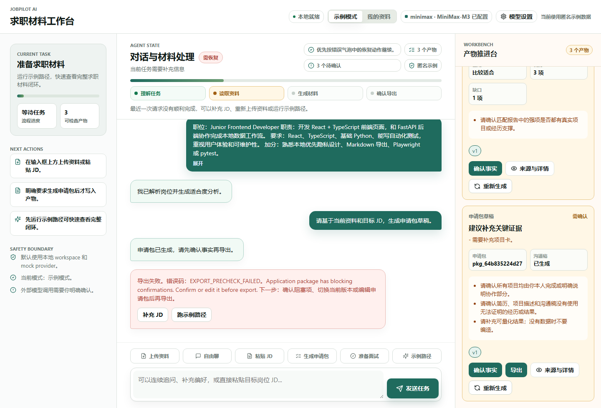
p5-local-data-closure-evidence/p5_export_blocked.png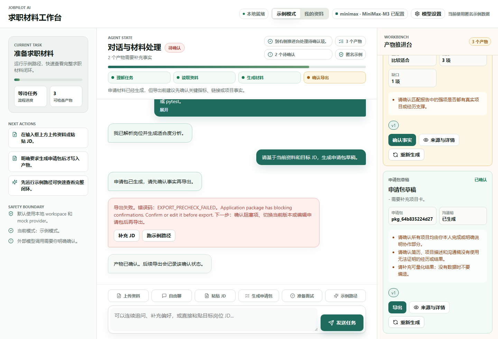
p5-local-data-closure-evidence/p5_package_confirmed.png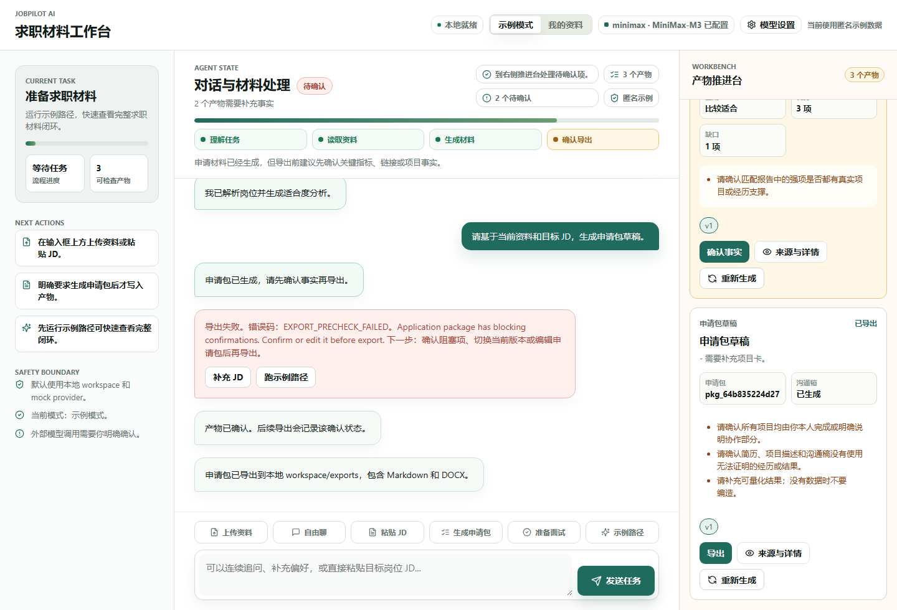
p5-local-data-closure-evidence/p5_export_completed.png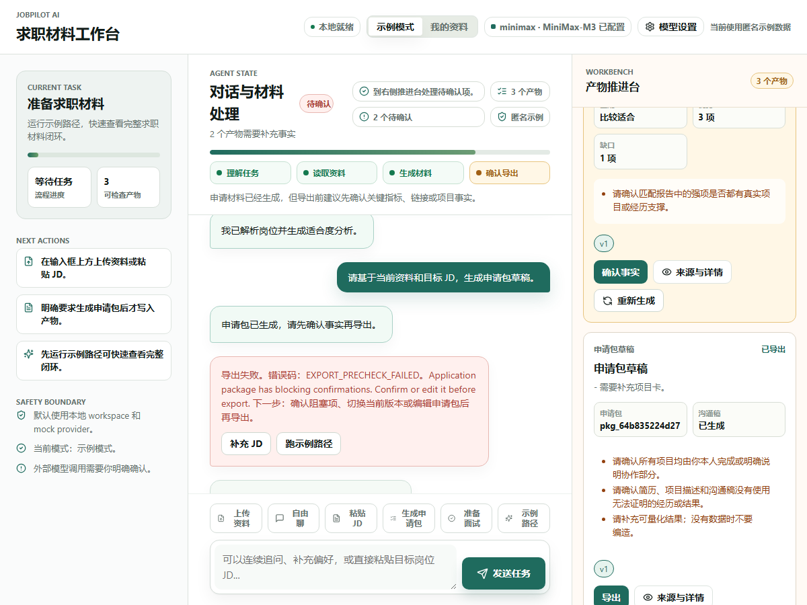
p5-local-data-closure-evidence/p5_export_completed_1200.png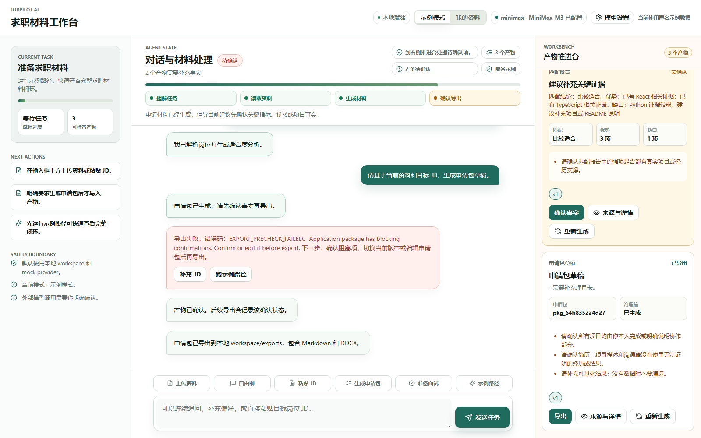
p5-local-data-closure-evidence/p5_export_completed_1600.png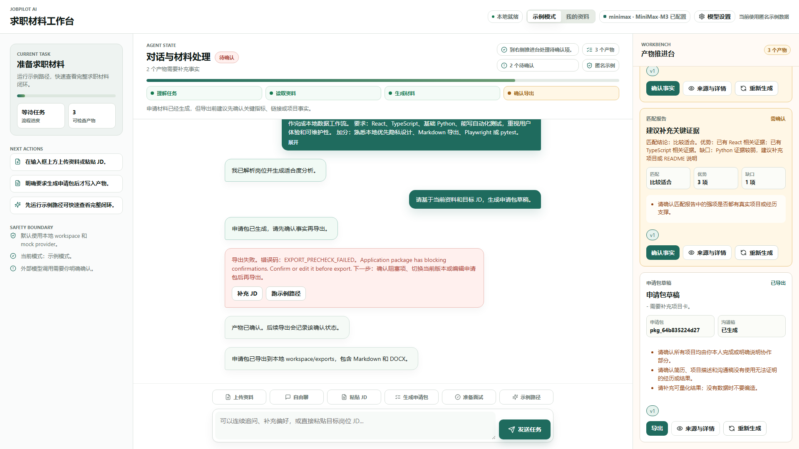
p5-local-data-closure-evidence/p5_export_completed_1920.png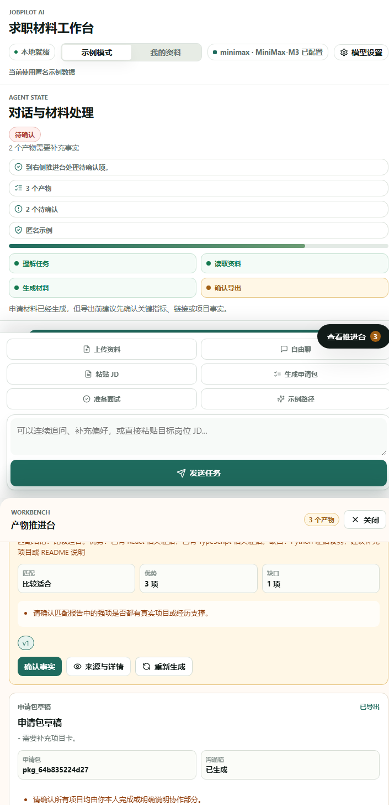
p5-local-data-closure-evidence/p5_export_completed_720.png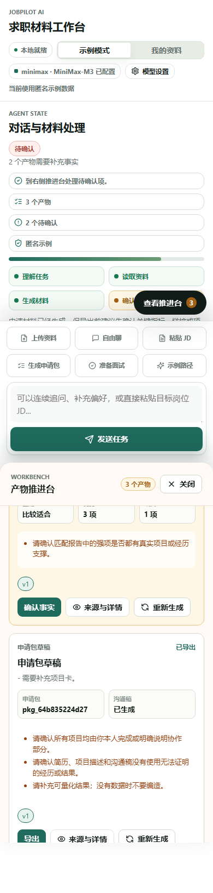
p5-local-data-closure-evidence/p5_export_completed_mobile.png未验证范围与审计意见
- 未使用用户真实个人资料；自动化资料来自仓库内脱敏 fixture。
- 未配置或调用 MiniMax、DeepSeek、OpenAI-compatible 等真实外部 provider。
- 未验证 SaaS 登录、多租户、计费、ASR、会议平台、自动投递、真实招聘网站投递。
- 未替代人工体验审查；截图只能证明本次自动化路径实际通过。
如果所有步骤通过，本报告只能支持 P5 本地/mock 自动化路径达到开发验收候选状态。P5 最终冻结仍需要完整回归、脱敏截图复核和人工体验记录。